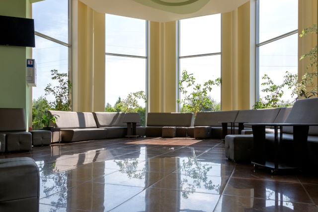
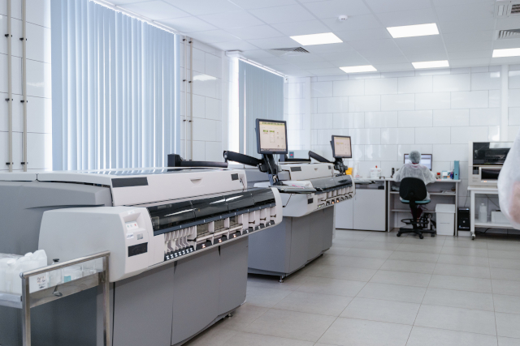

CLINIC & ACCESS 医院紹介・アクセス
FACILITY 医院紹介
患者様にリラックスして受診していただけるよう、清潔で落ち着いた空間づくりを心がけております。

受付・待合室
明るく開放的な待合室でお迎えいたします。車椅子の方でもそのままスムーズにご利用いただけます。

診察室
プライバシーに配慮した個室構造となっております。お体の不調や気になる点など、お気軽にご相談ください。

処置室・検査設備
心電図やレントゲンなど、各種検査機器を備えております。スピーディーで的確な診断に努めています。